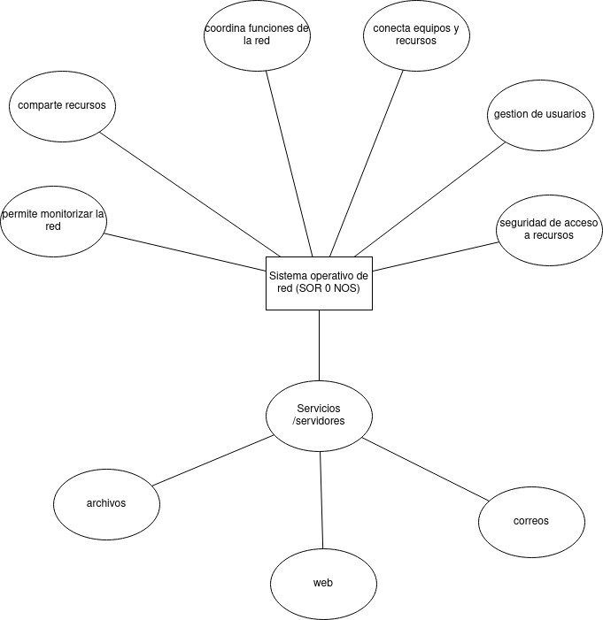

El sistema operativo de red es un tipo de software de los muchísimos que podemos encontrar. Este, en particular, se encarga de posibilitar el funcionamiento de una red de ordenadores. Sería el equivalente del sistema operativo de nuestro ordenador pero, como decimos, para una red.
De este modo, se posibilita el acceso y el uso a los diferentes recursos que cada uno de los puntos de la red incluyen, considerando como tales tanto sus elementos de software como de hardware (los propios equipos o elementos periféricos), los propios usuarios, las bases de datos e incluso la seguridad de la información.
Lo que hace es, a fin de cuentas, permitir que se dé una comunicación del sistema informático, es decir, de dos o más equipos, de manera física o inalámbrica.
Las características comunes a todos ellos y las que, por tanto, lo definen con recurso informático son:
Mapa Semantico de funciones principales
Planificacion instalacion CentOS
CentOS
CentOS (Community ENTerprise Operating System) surge como rama de Red Hat Enterprise Linux (RHEL), compilado por desarrolladores a partir del código fuente de Red Hat.
Esquema de particiones
A menos de que tenga una buena razón para hacer lo contrario, le recomendamos que cree las siguientes particiones para los sistemas x86, AMD64, e Intel 64 systems:
- Una partición swap
- Una partición /boot
- Una partición /
- Una partición home
Una partición swap (de al menos 256 MB) — las particiones swap sirven para soportar la memoria virtual. En otras palabras, los datos se escriben en una partición swap cuando no hay suficiente memoria RAM para almacenar la información que su sistema está procesando.
Una partición /boot (250 MB) La partición montada en /boot/ contiene el kernel del sistema operativo (el cual permite a su sistema arrancar Red Hat Enterprise Linux) junto con archivos utilizados durante el proceso de arranque. Para la mayoría de los usuarios, una partición de arranque de 250 MB es suficiente.
Una partición root (3.0 GB - 5.0 GB) Aquí es donde se localiza "/" (el directorio raíz). En esta configuración, todos los archivos (excepto aquellos almacenados en /boot) están en la partición raíz. 3.0 GB le permite instalar una instalación mínima, mientras que una partición raíz de 5.0 GB le permite realizar una instalación completa, seleccionando todos los grupos de paquetes.
Estructura de Directorios en CentOS
Al igual que en las demás distribuciones Linux, posee un sistema de estructura jerarquico, a continuación mostraremos los directorios principales de CentOS y su destino.
- Directorio /bin: Es el directorio donde se alojan los ficheros ejecutables, su nombre refiere a: bin = binaries
- Directorio /boot: Directorio destinado a ficheros y otros directorios del tipo arranque (boot).
- Directorio /dev: Contiene ficheros de dispositivos.
- Directorio /etc: Podemos encontrar ficheros y directorios correspondientes a configuraciones especificas para el sistema.
- Directorio /home: EL directorio utilizado a nivel de usuarios, en el se alojan: documentos, directorios, etc.
- Directorio /lib: Contiene librerías compartidas necesarias para los binarios de /bin/, /sbin/ y el núcleo del sistema.
- Directorio /lost+found: Aquí se alojan los archivos perdidos pertenecientes a cada partición.
- Directorio /media: En el se montan los dispositivos multimedia como las unidades ópticas etc.
- Directorio /mnt: Sistemas de ficheros montados temporalmente.
- Directorio/proc: Aquí se encuentra la información sobre diferentes partes del sistema, cpu, discos, tiempo uptime, irqs, memoria, etc.
- Directorio/root: Directorio perteneciente al superusuario del sistema ( root )
- Directorio/sbin: Contiene archivos ejecutables que por lo general son comandos usados para la administración del sistema.
- Directorio /sys: directorio con parámetros de configuración que se estén ejecutando. Datos del kernel, bus, dispositivos y demás.
- Directorio /tmp: Aquí se encuentran los directorios y archivos temporales. Estos archivos y directorios se eliminan con el apagado del sistema.
- Directorio /usr: Un directorio compartido entre todos los usuarios del sistema. En el se suelen guardar aplicaciones, librerías, etc.
- Directorio /var: En el se almacenan datos que están en cambio continuo como por ejemplo ficheros de log del sistema, correo, etc.
Conclusion
Centos es un sistema que actualmente es ampliamente utilizado y que contiene la mayor cantidad de funcionalidad y metodologias de seguridad necesarias para cualquier tipo de servidor. actualmente es un sistema que podemos encontrar en servicios de hosting compartido de forma casi inequivoca al ser un sistema confiable, barato y seguro.